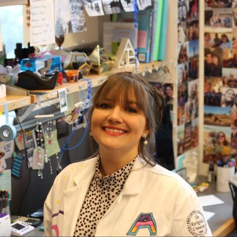
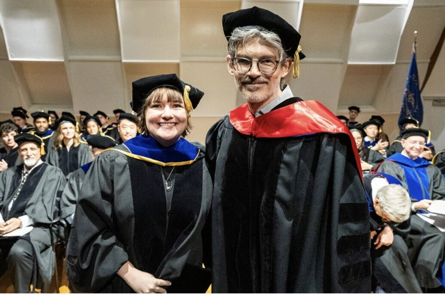

I grew up learning to survive, then learned what it felt like to learn out of curiosity instead. Since then I've taken apart a few different systems — neurons, bacteria, viruses — to see how they work, and found I love teaching that same curiosity as much as I love the research itself.
I grew up in Bulawayo, Zimbabwe, where learning was something you did because you had to — a way of getting somewhere safer, somewhere more secure. It wasn't until I arrived at Brandeis that I learned what it felt like to study something purely because it fascinated me. That shift, from learning to survive to learning because I wanted to, changed the trajectory of everything that came after.
As a neuroscience major at Brandeis, I joined Avi Rodal's lab studying TDP-43 in ALS. I was captivated by the idea that you could take the most complex system we know of — the brain — and dissect it piece by piece to understand how it breaks down.
I carried that fascination to Rockefeller University, fully intending to join another neuroscience lab. But a rotation in Jeremy Rock's lab, just for fun, just to see, pulled me sideways into host-pathogen biology — and I never went back. I landed in Luciano Marraffini's lab studying CRISPR-Cas immunity and the bacteriophage that bacteria defend against. Phage turned out to be the most fulfilling system I've worked in: simple enough that you can pry apart mechanistic detail in a way you simply can't in an animal model. That work became my PhD thesis and a co-first-author paper in Cell Host & Microbe.

What I took away from that lab, though, wasn't just a thesis — it was a lesson about environment.
The environment matters more than the question.
Science can be deeply impactful, but you need safety and curiosity built in together: room to fail and still show up the next day without feeling like a disappointment. That's the single most important thing to know about how I work, teach, and mentor.
That lesson became a practice when I started mentoring graduate students through RockEdu, watching someone go from stuck to curious again — and realizing how much I love to teach.
Next, I'm joining the Jackson lab at Utah State University to continue studying CRISPR-Cas systems and bacteriophage, while also teaching biochemistry — a step toward my long-term goal of a teaching-focused faculty position where I get to keep doing both.
In my classroom, the focus is curiosity: building an environment safe enough that students feel free to wonder out loud, get something wrong, and stay curious anyway.
So many students walk in already convinced they're behind their peers, certain they don't quite belong in science. A good part of my teaching is about eradicating that doubt — helping each one see that they do have a place here, and that every person in the room has something real to contribute.
I've designed and taught microbiology and plant biology labs for high school students, mentored graduate students through RockEdu, and built course materials that treat curiosity and belonging as the real curriculum — not an afterthought to content.
I'm always glad to hear from fellow scientists, educators, and search committees. The fastest ways to reach me or learn more are below.